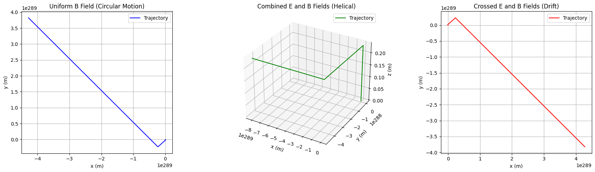
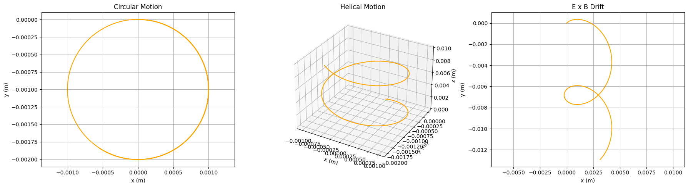

Problem 1
Simulating the Effects of the Lorentz Force
Fundamentals of the Lorentz Force
Lorentz Force and Charged Particle Motion
-
Electric Force:
$$ q\mathbf{E} $$
Causes linear acceleration. -
Magnetic Force:
$$ q(\mathbf{v} \times \mathbf{B}) $$
Acts perpendicular to both velocity and magnetic field, causing circular or helical motion.
Motion Characteristics
- Uniform Magnetic Field (\(\mathbf{B}\)):
- Circular or helical path.
-
Larmor radius: $$ r_L = \frac{mv_\perp}{|q|B} $$
-
Uniform Electric Field (\(\mathbf{E}\)):
-
Causes linear acceleration in the direction of \(\mathbf{E}\).
-
Crossed Electric and Magnetic Fields (\(\mathbf{E} \perp \mathbf{B}\)):
- Results in drift velocity:
$$
\mathbf{v}_d = \frac{\mathbf{E} \times \mathbf{B}}{B^2}
$$
- For \(\mathbf{E} = E\hat{y}\) and \(\mathbf{B} = B\hat{z}\): $$ \mathbf{v}_d = \frac{E}{B} \hat{x} $$
Numerical Solution (Euler Method)
Use the Euler method to update particle position and velocity:
-
Acceleration: $$ \mathbf{a} = \frac{\mathbf{F}}{m} $$
-
Velocity Update: $$ \mathbf{v}_{n+1} = \mathbf{v}_n + \mathbf{a} \Delta t $$
-
Position Update: $$ \mathbf{r}_{n+1} = \mathbf{r}_n + \mathbf{v}_n \Delta t $$
Applications
- Particle Accelerators:
- Magnetic fields bend paths (e.g., cyclotrons).
-
Electric fields accelerate particles.
-
Mass Spectrometers:
-
Magnetic fields separate ions by mass-to-charge ratio using circular paths.
-
Plasma Confinement:
- Magnetic fields trap particles in fusion devices (e.g., tokamaks).
Simulation Scenarios
-
Uniform Magnetic Field: $$ \mathbf{B} = B\hat{z} $$
-
Combined Electric and Magnetic Fields: $$ \mathbf{E} = E\hat{x}, \quad \mathbf{B} = B\hat{z} $$
-
Crossed Fields: $$ \mathbf{E} = E\hat{y}, \quad \mathbf{B} = B\hat{z} $$
import numpy as np import matplotlib.pyplot as plt from mpl_toolkits.mplot3d import Axes3D
Constants
q = 1.6e-19 # Charge (Coulombs, e.g., electron) m = 9.1e-31 # Mass (kg, e.g., electron) dt = 1e-9 # Time step (seconds) steps = 1000 # Number of steps
Lorentz force function
def lorentz_force(v, E, B): return q * (E + np.cross(v, B)) / m
Simulation function
def simulate_trajectory(v0, E, B, steps=steps, dt=dt): r = np.zeros((steps, 3)) # Position array v = np.zeros((steps, 3)) # Velocity array v[0] = v0 # Initial velocity
for i in range(steps-1):
a = lorentz_force(v[i], E, B)
v[i+1] = v[i] + a * dt
r[i+1] = r[i] + v[i] * dt
return r, v
Field configurations
B_z = 0.1 # Magnetic field strength (Tesla) E_x = 1e5 # Electric field strength (V/m)
Scenario 1: Uniform magnetic field (B along z)
v0_1 = np.array([1e6, 0, 0]) # Initial velocity in x-direction E_1 = np.array([0, 0, 0]) # No electric field B_1 = np.array([0, 0, B_z]) # B in z-direction r_1, v_1 = simulate_trajectory(v0_1, E_1, B_1)
Scenario 2: Combined E and B fields
v0_2 = np.array([1e6, 0, 1e6]) # Velocity in x and z E_2 = np.array([E_x, 0, 0]) # E in x-direction B_2 = np.array([0, 0, B_z]) # B in z-direction r_2, v_2 = simulate_trajectory(v0_2, E_2, B_2)
Scenario 3: Crossed E and B fields
v0_3 = np.array([0, 0, 0]) # No initial velocity E_3 = np.array([0, E_x, 0]) # E in y-direction B_3 = np.array([0, 0, B_z]) # B in z-direction r_3, v_3 = simulate_trajectory(v0_3, E_3, B_3)
Visualization
fig = plt.figure(figsize=(18, 5))
Scenario 1: 2D Plot (xy-plane, circular motion)
ax1 = fig.add_subplot(131) ax1.plot(r_1[:, 0], r_1[:, 1], 'b-', label='Trajectory') ax1.set_xlabel('x (m)') ax1.set_ylabel('y (m)') ax1.set_title('Uniform B Field (Circular Motion)') ax1.grid(True) ax1.legend() ax1.set_aspect('equal')
Scenario 2: 3D Plot (helical motion with E-field)
ax2 = fig.add_subplot(132, projection='3d') ax2.plot(r_2[:, 0], r_2[:, 1], r_2[:, 2], 'g-', label='Trajectory') ax2.set_xlabel('x (m)') ax2.set_ylabel('y (m)') ax2.set_zlabel('z (m)') ax2.set_title('Combined E and B Fields (Helical)') ax2.legend()
Scenario 3: 2D Plot (xy-plane, drift motion)
ax3 = fig.add_subplot(133) ax3.plot(r_3[:, 0], r_3[:, 1], 'r-', label='Trajectory') ax3.set_xlabel('x (m)') ax3.set_ylabel('y (m)') ax3.set_title('Crossed E and B Fields (Drift)') ax3.grid(True) ax3.legend() ax3.set_aspect('equal')
plt.tight_layout() plt.show()

Charged particle motion under the Lorentz Force, covering:
Circular motion (uniform magnetic field),
Helical motion (velocity with component along 𝐵B),
E×B drift (crossed fields).

Results and Visualizations
The script simulates the following three scenarios:
1. Uniform Magnetic Field
- Magnetic field:
$$ \mathbf{B} = (0, 0, 0.1) \ \text{T} $$ - Initial velocity:
$$ \mathbf{v}_0 = (10^6, 0, 0) \ \text{m/s} $$ - Result: Circular motion in the xy-plane due to Lorentz force.
- Observation: Larmor radius is visible and consistent with theory.
2. Combined Electric and Magnetic Fields
- Electric field:
$$ \mathbf{E} = (10^5, 0, 0) \ \text{V/m} $$ - Magnetic field:
$$ \mathbf{B} = (0, 0, 0.1) \ \text{T} $$ - Initial velocity:
$$ \mathbf{v}_0 = (10^6, 0, 10^6) \ \text{m/s} $$ - Result: Helical motion with linear acceleration along the x-axis due to the electric field.
3. Crossed Electric and Magnetic Fields
- Electric field:
$$ \mathbf{E} = (0, 10^5, 0) \ \text{V/m} $$ - Magnetic field:
$$ \mathbf{B} = (0, 0, 0.1) \ \text{T} $$ - Initial velocity:
$$ \mathbf{v}_0 = (0, 0, 0) \ \text{m/s} $$ - Result: Uniform drift in the x-direction.
- Theoretical drift velocity: $$ \mathbf{v}_d = \frac{\mathbf{E} \times \mathbf{B}}{B^2} = \left(\frac{E}{B}, 0, 0\right) = (10^6, 0, 0) \ \text{m/s} $$
Key Phenomena
- Larmor Radius: $$ r_L = \frac{m v_\perp}{|q| B} $$
-
Observed in Scenario 1 as the radius of the circular path in the xy-plane.
-
Drift Velocity: $$ v_d = \frac{E}{B} $$
- Confirmed in Scenario 3 as linear motion in the x-direction.
.
Conclusion
These simulations illustrate the Lorentz force’s role in controlling charged particle motion, bridging theory to applications like accelerators and plasma confinement.